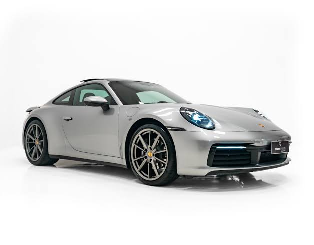
O Porsche 911 é um dos carros esportivos mais conhecidos do mundo. Com um design que evoluiu ao longo das décadas sem perder sua identidade, o modelo combina desempenho, tecnologia e conforto. Seu motor e sua dirigibilidade fazem dele uma referência entre os carros esportivos.
Voltar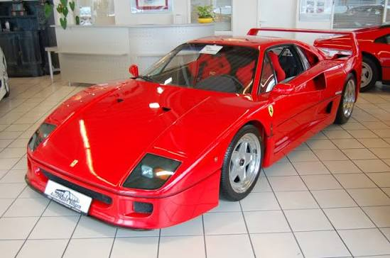
A Ferrari F40 é considerada um dos grandes ícones da história dos supercarros. Criada para celebrar os 40 anos da Ferrari, ela possui um visual agressivo e foi desenvolvida com foco no desempenho. Seu baixo peso, motor potente e construção voltada para a velocidade fizeram da F40 um carro lendário.
Voltar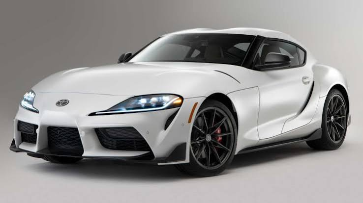
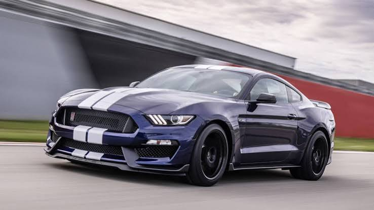
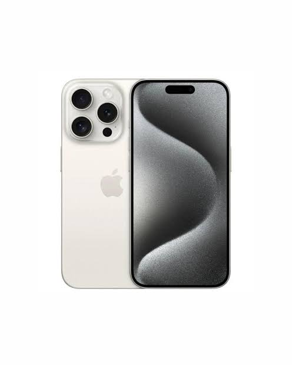
O iPhone 15 Pro é um smartphone premium da Apple que combina alto desempenho, câmeras avançadas e um acabamento sofisticado. O aparelho utiliza o chip A17 Pro, desenvolvido para oferecer grande capacidade de processamento. Ele também possui uma tela Super Retina XDR de 6,1 polegadas e sistema de câmeras voltado para fotografia e gravação de vídeos em alta qualidade.
Voltar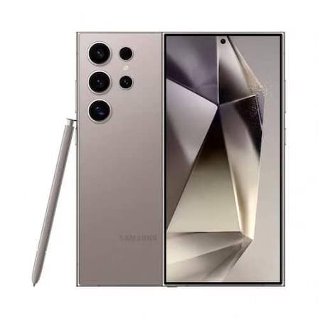
O Samsung Galaxy S24 Ultra é um smartphone premium da Samsung que combina alto desempenho, câmeras avançadas e um acabamento sofisticado. O aparelho utiliza o chip Exynos 2400, desenvolvido para oferecer grande capacidade de processamento. Ele também possui uma tela Dynamic AMOLED de 6,8 polegadas e sistema de câmeras voltado para fotografia e gravação de vídeos em alta qualidade.
Voltar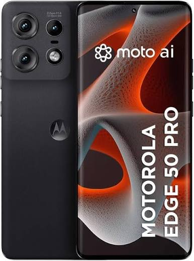
O Motorola Edge 50 Pro é um smartphone premium da Motorola que combina alto desempenho, câmeras avançadas e um acabamento sofisticado. O aparelho utiliza o chip Snapdragon 8 Gen 2, desenvolvido para oferecer grande capacidade de processamento. Ele também possui uma tela OLED de 6,6 polegadas e sistema de câmeras voltado para fotografia e gravação de vídeos em alta qualidade.
Voltar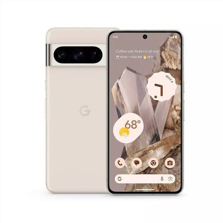
O Google Pixel 8 Pro é um smartphone premium da Google que combina alto desempenho, câmeras avançadas e um acabamento sofisticado. O aparelho utiliza o chip Tensor G2, desenvolvido para oferecer grande capacidade de processamento. Ele também possui uma tela OLED de 6,7 polegadas e sistema de câmeras voltado para fotografia e gravação de vídeos em alta qualidade.
VoltarO Abajur é um acessório de iluminação que pode ser usado para iluminar uma área específica de uma sala ou quarto. Ele pode ser instalado na parede ou colocado em cima de uma mesa.
Voltar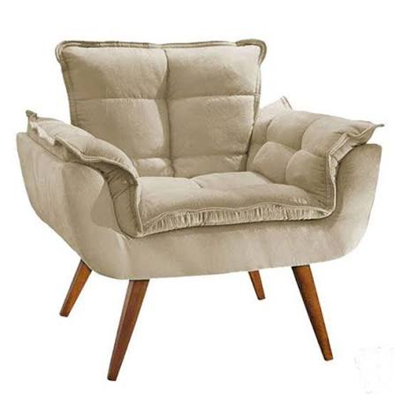
A Poltrona é um mobiliário de sala que oferece conforto e estilo para o ambiente. Ela pode ser usada como peça principal ou complementar em uma sala de estar.
Voltar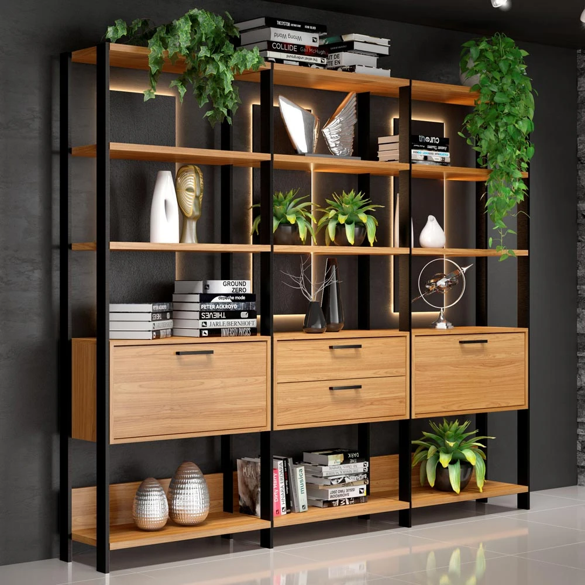
A Estante é um mobiliário de sala que oferece armazenamento e organização para o ambiente. Ela pode ser usada como peça principal ou complementar em uma sala de estar.
VoltarO Canto é um mobiliário de sala que oferece armazenamento e organização para o ambiente. Ele pode ser usado como peça principal ou complementar em uma sala de estar.
Voltar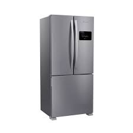
A Geladeira é um eletrodoméstico essencial para o armazenamento de alimentos. Ela mantém os alimentos frescos por mais tempo, oferecendo praticidade e conveniência no dia a dia.
Voltar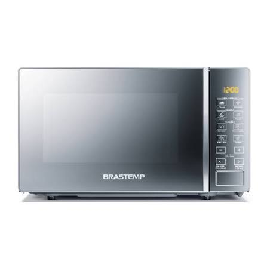
O Micro-ondas é um eletrodoméstico que utiliza ondas eletromagnéticas para aquecer e cozinhar alimentos de forma rápida e eficiente.
Voltar
A Máquina de Lavar é um eletrodoméstico que facilita a lavagem de roupas de forma rápida e eficiente.
Voltar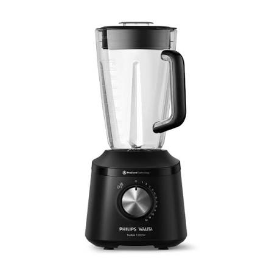
O Liquidificador é um eletrodoméstico que facilita a preparação de bebidas e alimentos de forma rápida e eficiente.
Voltar